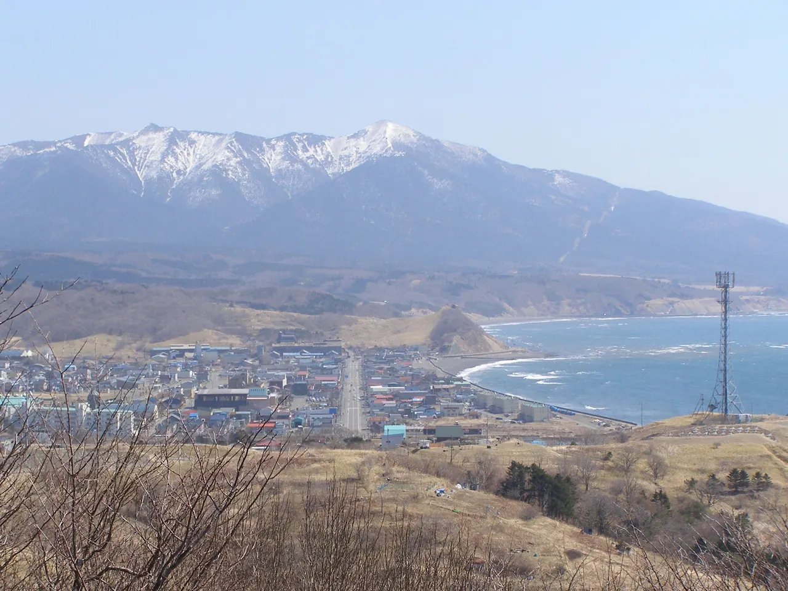
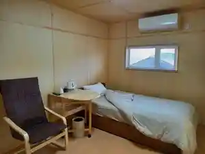
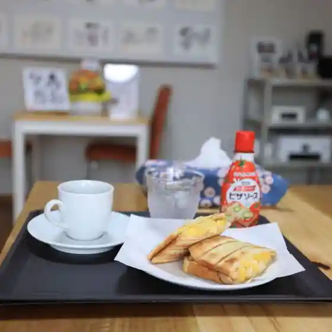
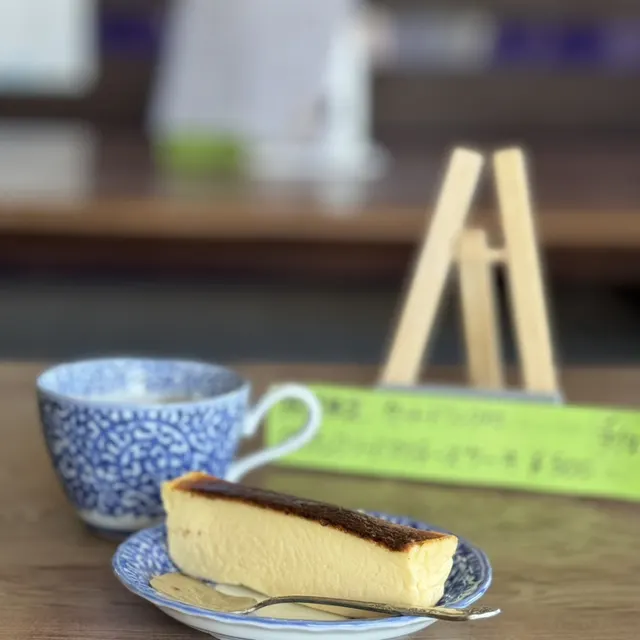
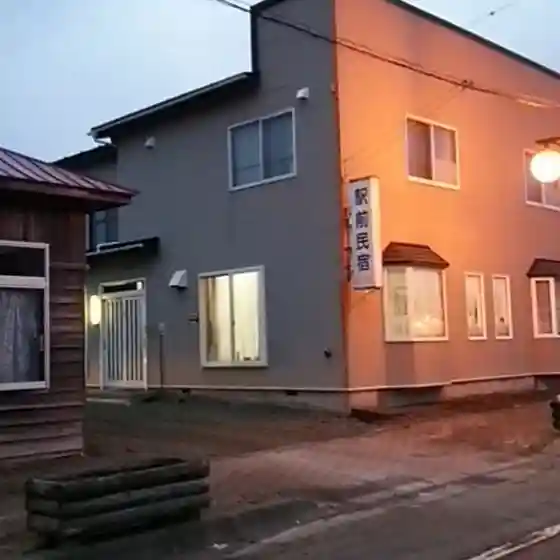
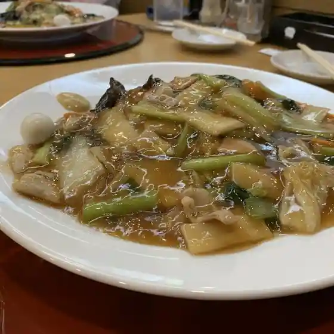
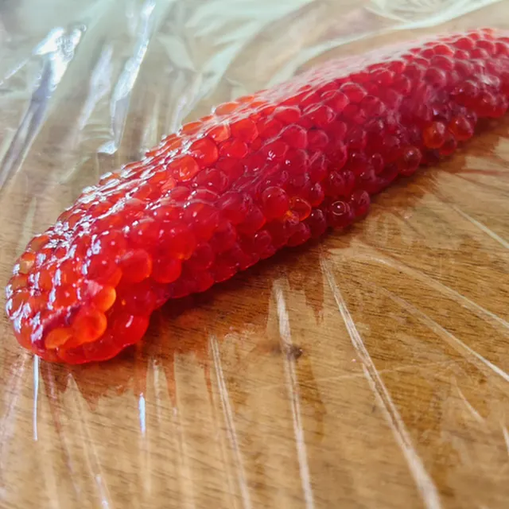
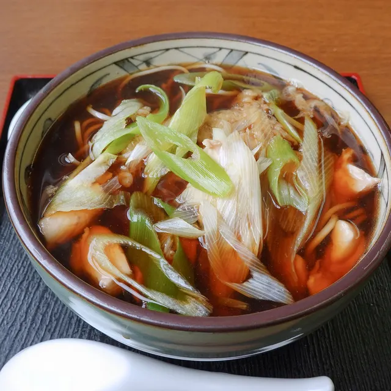
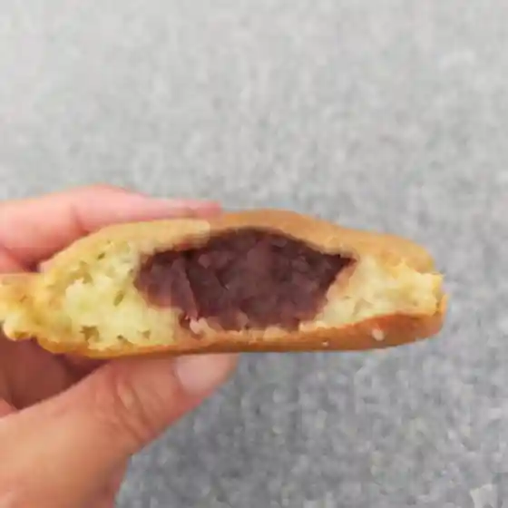
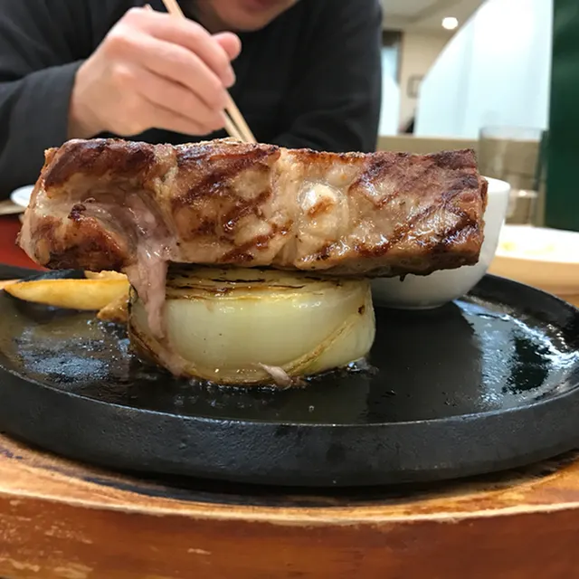

Samani
Samani · Hokkaido
Samani
Highlighted on the Hokkaido map.

Stay
民宿 おみなえし

Minshuku Ominaeshi
アポイ山荘
Apoi Sansou
Dining
まんまの台所

Manmano Daidokoro
ドライブイン車屋

Doraibuin Kurumaya
エキマエ民宿

Ekimae Minshuku
レストラン 星の彩

Resutoran Hoshi No Sai
丸富水産

Maru Tomi Suisan
味よし

Aji Yoshi
中村おやき店 本店

Nakamura Oyaki Mise Honten
ホテルアポイ山荘

Hoteruapoi Sansou
女郎花
Ominaeshi
コープさっぽろ 様似店
Koopu Sapporo Samani Mise
様似観光案内所
Samani Kankouannaijo
民宿味方村
Minshuku Mikata Mura
味寿々プラザホテル
Aji Hisashi (Kurikaesi) Purazahoteru
壱幸
Kazuyuki
庄ちゃんラーメン
Shou Chan Raamen
アビヨン
Abiyon
ミートショップ鳥井
Miitoshoppu Torii
弁慶
Benkei
百両
Hyaku Ryou
味方村
Mikata Mura
居酒屋いっぷく
Izakaya Ippuku
アポイ日和
Apoi Hiyori
たこ焼きのオウヤマ
Tako Yaki No Ouyama